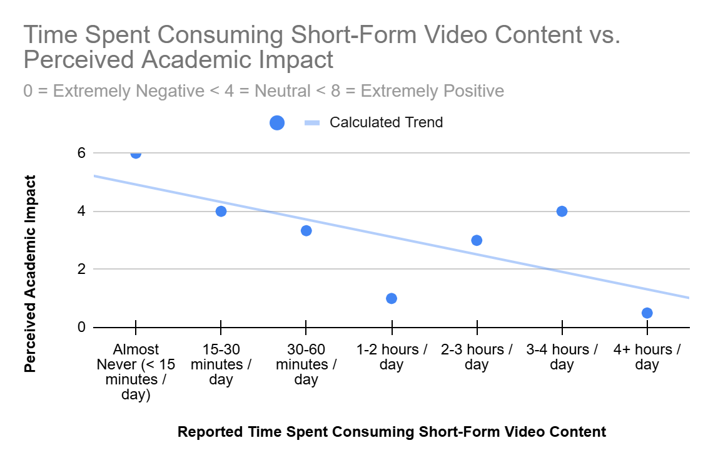
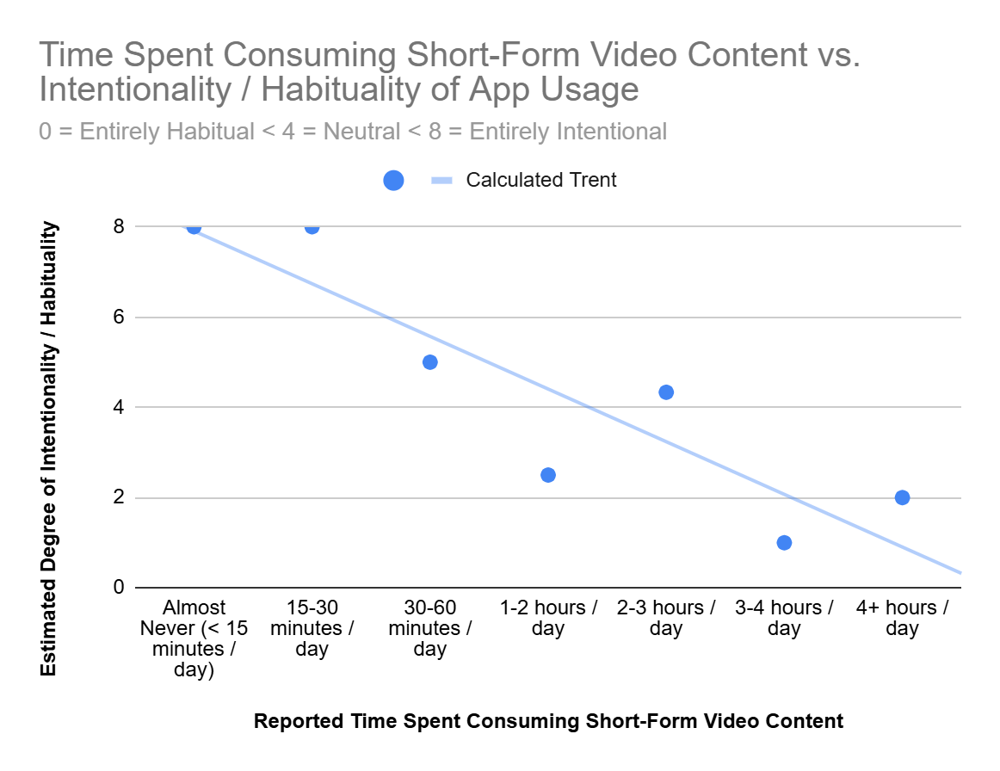
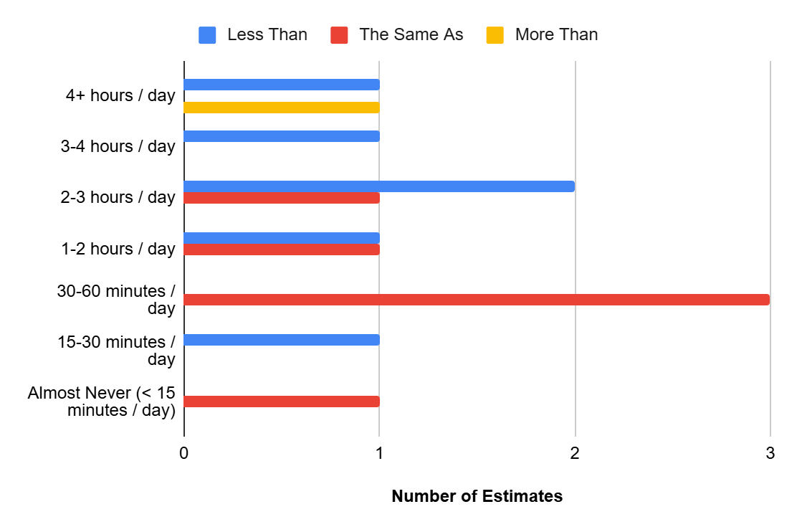
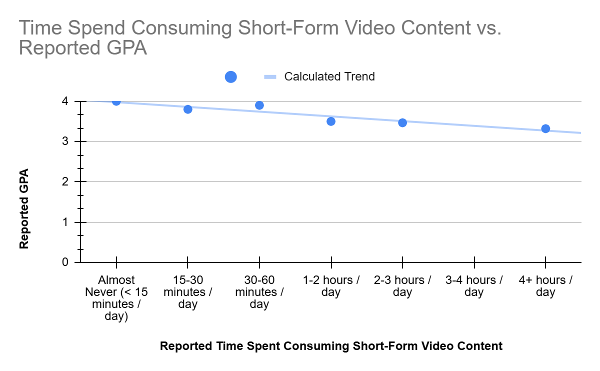

Research shows that short-form video addiction directly increases academic procrastination and indirectly harms academic performance by impairing a student's attentional control. Furthermore, excessive viewing is positively correlated with heightened symptoms of anxiety and increased learning burnout among undergraduates. Interestingly, studies also indicate that individuals who are highly prone to boredom might actually be more resilient to these specific attentional control impairments, resulting in less procrastination compared to others affected by the same addiction.
Excessive consumption of short-form videos is linked to significant cognitive and academic drawbacks, including increased procrastination, learning burnout, and anxiety.

After surveying thirteen students, a trend emerged: students who reported higher consumption times perceived more negative academic impacts. However, there is also notable deviation from the trend. Given the small sample size, it is difficult to draw a definitive conclusion, but another study does show that certain students (i.e. those with high boredom proneness) may be more resilient to the negative impacts of short-form video addiction, which could potentially explain the deviation.
Similar to the previous chart, the trend shows that students who reported higher consumption times also reported that they were more likely to open short-form video apps out of habit rather than intentionality. This trend also shows significantly less deviation that the perceived impact chart. This suggests that it may be more difficult for students to perceive the impacts of their short-form video consumption than it is for them to realize that short-form video consumption is a habit.


As shown in this chart, only one student estimated that they spent more time consuming short-form videos than their peers. Of the remaining students, half estimated that the spent the same amount of time, while the other half estimated that they spent less time. When considering that there was a positive correlation between reported consumption time and perceived negative impact and habituality, this suggests that the habit has been largely normalized among students, even though they recognize it as both harmful and habitual.
While this chart does appear to show a positive correlation between consumption time and GPA, it is important to note that ten out of the thirteen students surveyed reported a relatively high GPA of 3.5 or higher, which generally does not capture the full "average" student population. To assess the trend more accurately, a larger and more diverse sample size should be surveyed.
